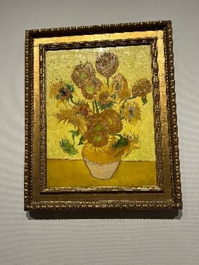
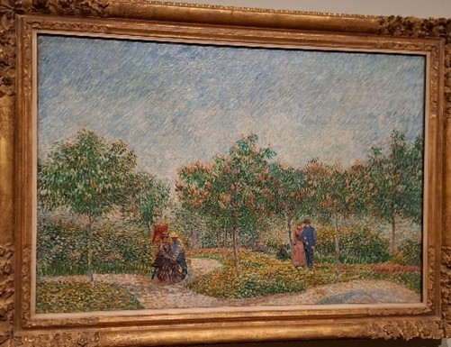
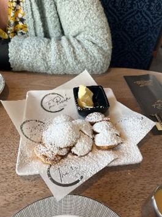
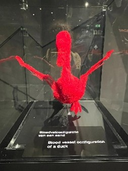
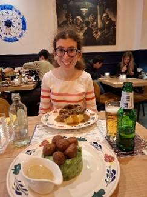
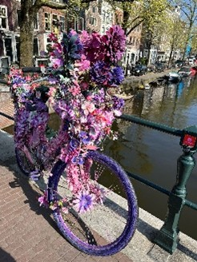
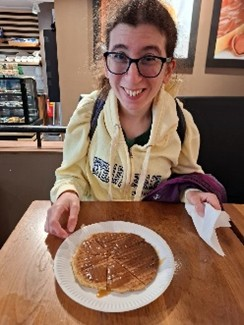

Van Gogh, Canals and Dutch Pancakes
By Charlotte Archer
Hello everyone, I’m Charlotte and I recently went on a Travel Buddy Holiday to Amsterdam! This was my third Travel Buddy Holiday, after Barcelona and Vienna, and holidays in Dartmoor and Galicia. But that’s a different story.
Any Go Beyond Holiday really starts when Ian makes the WhatsApp Group so we can all keep in contact. Then it’s just a small matter of getting your suitcase packed. It was great getting to see Su again! With Su’s support, I coped with the airport, the airplane, my nerves…
And then our adventure in Amsterdam began! Su helped me to get out of the airport and onto the train into the centre of the city. The weather was so lovely and warm as we went on our canal trip. Su pointed out what the guides told us about so I could see them too. This was a lovely introduction to Amsterdam, and already ticking one item off my list!
The next day started bright and early as we were going to the Van Gogh Museum! A tram ride and some breakfast pastries later (Dutch apple cake is delicious!), then onto see some of the most impressive paintings of an iconic artist. I was so inspired I did my own drawing too! After, we went to the Canal Museum. This explored Amsterdam’s history and why Amsterdam has canals. I also ate some yummy Dutch pancakes – I’m getting to grips with Dutch cuisine!
Our third day, we spent the morning at the Nemo Science Museum. The exhibits were hands on and interactive, and they really bring science to life! I spent most of my morning in the Human Biology section exploring how the body and brain works. In the afternoon we visited the Anne Frank House, which was a fitting tribute to Anne and those who had their lives cruelly snatched away from them. For dinner, we went to a Dutch restaurant and had authentic Dutch cuisine – Stamppot. This is mashed potatoes and meat or vegetables, and is delicious.
Our fourth day, in the morning we had a Walking Tour of Amsterdam, where our guide pointed out places of interest. This was so interesting, I could have had a longer walk! And for lunch, I tried Bitteballen. These are little balls of beef in gravy and a roux sauce, then deepfried in breadcrumbs. My last afternoon, I went to Body Worlds to see more about the human body. We explored how happiness and being happy impacts us. There were more hands on activities here such as taking your blood pressure, which Su helped me with. We even saw the blood vessels of a duck! Su also helped me find De Prael, a bar the tour guide had mentioned on the walking tour. Its run and staffed entirely by people who are disabled or mentally ill, helping them to work and contribute to society. And then to find my final bit of Dutch cuisine – tasty stroopwaffle!
On the final morning before going to the airport we walked around Amsterdam one final time. We found a water fountain which changes how it spurts out water. Then back to the airport, the plane ride, and back home!
I cannot wait for Brittany this Summer!
See you then!
Author: Charlotte Archer
12 May 2025



Van Gogh’s Sunflowers
Van Gogh’s Square Saint-Pierre
my drawing inspired by Van Gogh’s Square Saint-Pierre
Dutch Pancakes
Bitteballen
blood vessels in a duck
Stamppot
a bike on a canal bridge
Stroopwaffle
Related posts

Go Beyond Holidays is an independent agent for 360 Private Travel. All flights and flight-inclusive holidays on this website are financially protected by the ATOL scheme.
Phone number 00 44 7904 878365
E-mail: info@gobeyondholidays.com

Registered Name & Address:
360 Private Travel Limited, 54 High Street, Sevenoaks, TN13 1JG, United Kingdom,
Registration Number: 8512928. Registered in England & Wales
VAT Number: 163818688 ATOL 7514 IATA 91-2 0005 6 Virtuoso Member Number 3251
An independent affiliate of

360 Private Travel is a member of Virtuoso, allowing Go Beyond Holidays access to preferential rates and exclusive benefits at some of the finest hotels around the world.
For Your Financial Protection